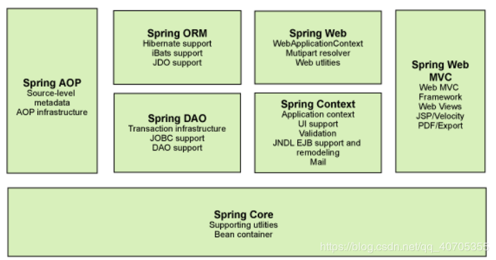

这是SSM系列框架学习的基础。
一.Spring简介
我们一般说 Spring 框架指的都是 Spring Framework，Spring是一个开源框架，Spring是于2003年兴起的一个轻量级的Java开发框架，由Rod Johnson在其著作Expert One-On-One J2EE Development and Design中阐述的部分理念和原型衍生而来。
1.Spring一个开源的，用来简化企业级应用开发的应用开发框架。
2.使用Spring的目的：spring的本质是管理软件的对象，即如创建对象和维护对象之间的关系。
3.Spring的核心思想是IOC（控制反转）和AOP(面向切面编程)，即不再需要程序员去显式地new一个对象，而是让Spring框架帮你来完成这一切。
二.Spring框架
Spring 框架是一个分层架构，由 7 个定义良好的模块组成。Spring 模块构建在核心容器之上，核心容器定义了创建、配置和管理 bean 的方式，组成Spring的每一个模块都可以单独存在，或则与其他一个或多个模块联合实现。Spring框架7个模块如图：

每个模块的功能如下：
1.Spring Core：核心容器——核心容器提供 Spring 框架的基本功能。核心容器的主要组件是 BeanFactory，它是工厂模式的实现。BeanFactory 使用控制反转 （IOC） 模式将应用程序的配置和依赖性规范与实际的应用程序代码分开。
2.Spring Context：Spring上下文——Spring 上下文是一个配置文件，向 Spring 框架提供上下文信息。
3.Spring AOP：AOP(面向切面编程)——通过配置管理特性，Spring AOP 模块直接将面向切面的编程功能集成到了 Spring 框架中。所以，可以很容易地使 Spring 框架管理的任何对象支持 AOP。Spring AOP 模块为基于 Spring 的应用程序中的对象提供了事务管理服务。
4.Spring DAO：Spring的Dao模块式Spring框架中对应持久层的解决方式，提供了对JDBC、Hibernate、JDO等DAO层支持。 Spring框架对JDBC进行了封装，完全抛弃了JDBC API。数据库连接、事务等也交给了Spring打点，开发者只需要使用封装好的JdbcTemplate执行SQL语句，然后得到需要的结果。
5.Spring ORM：ORM的全称是Object Relational Mapping，即对象关系映射。它的实现思想就是将关系数据库中表的数据映射成为对象，以对象的形式展现，这样开发人员就可以把对数据库的操作转化为对这些对象的操作。
6.Spring Web：Web 上下文模块建立在应用程序上下文模块之上，Web 模块简化了处理多部分请求以及将请求参数绑定到域对象的工作。web则对远程调用和远程服务的支持。
7.Spring Web MVC：MVC 框架是一个全功能的构建 Web 应用程序的 MVC 实现，用于创建 Web 应用程序的可扩展 MVC 框架。webmvc主要是对mvc的支持，包括restful协议。
三.Spring开发具体步骤
步骤1：先导入指定jar包（5个，Spring的jar版本要统一，防止出问题,该jar包可以在maven官网下载）：
- commons-logging.jar
- spring-beans-5.1.3.RELEASE.jar
- spring-context-5.1.3.RELEASE.jar
- spring-core-5.1.3.RELEASE.jar
步骤2：书写一个普通的实体类（例：UserBean）
步骤3：为这个实体类书写指定的配置文件applicationContext.xml
步骤4：写一个测试类获得UserBean实例
四.Spring容器简介及Bean配置与实例化
4.1 Spring容器
在Spring中，任何java类和javaBean都会被当作Bean处理，这些Bean通过Spring容器进行管理和应用，Spring容器实现了IOC和AOP机制，这些机制可以简化Bean的创建和Bean对象之间的解耦。Spring容器有BeanFactory和ApplicationContext两种类型。BeanFactory是Spring中比较原始的Factory，ApplicationContext继承自BeanFactory接口，拥有更多企业级方法，原始的BeanFactory无法支持Spring的许多插件，如AOP功能，Web应用。所以在实际中推荐使用ApplicationContext。
实例化ApplicationContext的方式有两种：
方式一：
通过ClassPathXmlApplicationContext加载配置文件并实例化(重点掌握)：
其默认去默认路径下找配置文件，类路劲指的就是编译后.class文件所在位置的路径，普通文件在bin，web项目在web-info/classes中。
1 | // 单个配置文件 |
方式二：
通过FileSystemXmlApplicationContext加载配置文件并实例化
1 | //单个配置文件 |
4.2 Spring容器的Bean配置
从本质上来说BeanFactory和ApplicationContext仅仅知识一个维护Bean定义以及相互依赖关系的高级接口，我们可以通过他们的实例来获得我们需要的Bean实例。在实例化之前需要在容器的配置文件applicationContext.xml中添加对要用的Bean的定义。
例如：
1 | <bean id="userInfo" class="cn.pluto.test.UserInfo"/> |
其中id或name属性用于指定该Bean的名称，以便于从spring中查找该Bean，class用来指定该Bean的类型，即我们要实例化的类的全类名
然后我们就可以调用ApplicationContext实例的**getBean(“id或class属性”)**来获取Bean实例。
4.3 Bean实例化的方式
在Spring中实例化Bean一般有三种方式：
1.使用构造器实例化（使用最多）
2.使用静态工厂方法实例化
3.使用实例工厂方法实例化
3.3.1 构造器实例化
创建一个user类
1 | package entity; |
1.无参构造器实例化:Spring容器会通过调用无参构造器来实例化该类，这个方式实例化Bean要求要实例化的类中一定要有无参构造器
1 | <bean id="User" class="entity.User" /> |
2.带参构造器实例化：一定要有构造器
1 | <bean id="User2" class="entity.User" > |
实例化成功如下：
1 | package test; |
运行结果如下：
1 | "C:\Program Files\Java\jdk1.8.0_211\bin\java.exe" "-javaagent:C:\Program Files\JetBrains\IntelliJ IDEA 2018.3\lib\idea_rt.jar=4755:C:\Program Files\JetBrains\IntelliJ IDEA 2018.3\bin" -Dfile.encoding=UTF-8 -classpath "C:\Program Files\Java\jdk1.8.0_211\jre\lib\charsets.jar;C:\Program Files\Java\jdk1.8.0_211\jre\lib\deploy.jar;C:\Program Files\Java\jdk1.8.0_211\jre\lib\ext\access-bridge-64.jar;C:\Program Files\Java\jdk1.8.0_211\jre\lib\ext\cldrdata.jar;C:\Program Files\Java\jdk1.8.0_211\jre\lib\ext\dnsns.jar;C:\Program Files\Java\jdk1.8.0_211\jre\lib\ext\jaccess.jar;C:\Program Files\Java\jdk1.8.0_211\jre\lib\ext\jfxrt.jar;C:\Program Files\Java\jdk1.8.0_211\jre\lib\ext\localedata.jar;C:\Program Files\Java\jdk1.8.0_211\jre\lib\ext\nashorn.jar;C:\Program Files\Java\jdk1.8.0_211\jre\lib\ext\sunec.jar;C:\Program Files\Java\jdk1.8.0_211\jre\lib\ext\sunjce_provider.jar;C:\Program Files\Java\jdk1.8.0_211\jre\lib\ext\sunmscapi.jar;C:\Program Files\Java\jdk1.8.0_211\jre\lib\ext\sunpkcs11.jar;C:\Program Files\Java\jdk1.8.0_211\jre\lib\ext\zipfs.jar;C:\Program Files\Java\jdk1.8.0_211\jre\lib\javaws.jar;C:\Program Files\Java\jdk1.8.0_211\jre\lib\jce.jar;C:\Program Files\Java\jdk1.8.0_211\jre\lib\jfr.jar;C:\Program Files\Java\jdk1.8.0_211\jre\lib\jfxswt.jar;C:\Program Files\Java\jdk1.8.0_211\jre\lib\jsse.jar;C:\Program Files\Java\jdk1.8.0_211\jre\lib\management-agent.jar;C:\Program Files\Java\jdk1.8.0_211\jre\lib\plugin.jar;C:\Program Files\Java\jdk1.8.0_211\jre\lib\resources.jar;C:\Program Files\Java\jdk1.8.0_211\jre\lib\rt.jar;D:\ProgramData\WorkPlace_idea\WebDemo\web\WEB-INF\classes;D:\ProgramData\WorkPlace_idea\WebDemo\web\WEB-INF\lib\commons-logging-1.1.3.jar;D:\ProgramData\WorkPlace_idea\WebDemo\web\WEB-INF\lib\spring-core-5.1.3.RELEASE.jar;D:\ProgramData\WorkPlace_idea\WebDemo\web\WEB-INF\lib\spring-beans-5.1.3.RELEASE.jar;D:\ProgramData\WorkPlace_idea\WebDemo\web\WEB-INF\lib\spring-context-5.1.3.RELEASE.jar;D:\ProgramData\WorkPlace_idea\WebDemo\web\WEB-INF\lib\spring-expression-5.1.3.RELEASE.jar" test.Test |
4.3.2 静态工厂方法实例化
1 | public class UserFactory { |
1 | // factory-method属性指实现实例化类的静态方法 |
4.3.3 实例工厂方法实例化
1 | // 配置第一个bean是先用构造器方法实例化工厂类UserBeanFactory |
五.Bean的五个作用域
在bean有一个scope属性，通过设置该属性可以设置bean作用域
1.singleyon：单例模式，在整个Spring IOC容器中，使用singleton定义的Bean将只有一个实例。默认使用该作用域
2.prototype：原型模式，每次通过容器的getBean方法获取prototype定义的Bean时，都将产生一个新的Bean实例。
3.request：对于每次HTTP请求，使用request定义的Bean都将产生一个新实例，即每次HTTP请求将会产生不同的Bean实例。只有在Web应用中使用Spring时，该作用域才有效。
4.session：对于每次Http Session 用法和使用时机同上
5.globalsession：每个全局的HTTP Session，使用session定义的Bean都将产生一个新实例。一般用于Porlet应用环境，分布式系统存在全局session概念。如果不是porlet环境，globalSession 等同于Session。
六.生命周期和延迟实例化
通过为配置文件bean添加相应的init-method和destory-method属性，可以指定Bean中的某些方法为初始化方法和销毁方法。
延迟实例化：容器启动时不会实例化，在调用时才实例化
1 | <!-- 指定一个类的 |
七.Spring IOC和Spring DI
IOC：控制反转，它不是一种技术，而时一种设计思想，即java程序中获取对象的方式发生反转，由最初的new方式创建，转变成由第三方框架创建，注入。IOC是Spring的框架的基础和核心，有了IOC容器后，把创建和查找依赖对象的控制权交给了容器，由容器进行注入对象，所以对象和对象之间是松散耦合。
DI：依赖注入，IOC的一个重点是在系统运行中，动态的像某个对象提供它所需要的其他对象，这一点就是通过DI来实现，即DI是实现IOC的主要技术途径。
创建一个Student类:
1 | public class Student { |
依赖注入方式：
1.setter注入：使用property
2.构造器注入:使用constructor-arg
1 | <bean id="cat" class="cn.goktech.entity.Cat" init-method="init" destroy-method="destory" lazy-init="true"></bean> |
八.Spring参数注入
1.通过value属性实现基本类型数据注入
- setter注入
1 | <bean id="user" class="cn.goktech.entity.User"> |
- 构造器注入
1 | <bean id="user" class="cn.goktech.entity.User"> |
2.通过
1 | <!-- 测试集合框架 --> |
3.通过
1 | <bean id="testProp" class="cn.goktech.entity.TestProp"> |
4.使用util标签
创建jdbc.properties
1 | driver=com.jdbc.jdbc.Driver |
1 | <!-- 使用本地配置文件 --> |
5.使用Spring表达式
1 | <!-- 使用本地配置文件 --> |
九.自动装配
Spring能自动装配Bean与Bean之间的依赖关系，即无须使用ref属性显式地指定依赖Bean，而是由Spring容器检查XML配置文件内容。自动装配可以减少配置文件的工作量，但是降低了依赖关系的透明性和确定性。
通过设置autowire属性设置不同的装配方式
- no:默认值，不适用自动装配，bean之间的依赖关系完全由ref定
- byName:Spring容器以属性名作为id来查找相应的bean，调用set方法来完成注入
1 | <bean id="wt" class="ioc.Waiter"/> |
- 注： Spring仅仅会根据名字去查找，即使类型不匹配也会发生注入，只是在注入的时候抛出类型转换异常。如果找不到bean 则注入 null。
- byType：Spring容器查找与class属性一致的bean，然后调用set方法来注入
1 | <bean id="wt" class="ioc.Waiter"/> |
- 如果在xml配置文件找到多个同类型bean，则抛出异常
- constructor:容器查找与class属性一致的bean然后调用构造器完成
1 | <bean id="wt" class="ioc.Waiter"/> |
十.组件扫描及相关注解
10.1组件扫描
组件扫描是我们指定一个包路径，Spring会自动扫描该包及其子包所有组件，当发现这些组件类前由特定的注解标记时，就将该组件拉进Spring容器，其等价于原来XML配置
配置方式如下：
1 | <!-- 自动扫描注解配置 --> |
10.2 相关注解
- @Component:通用注解，是所有受Spring管理组建的通用形式，但是一般来说不推荐使用该注解
1 | //当spring扫描到该注解是，会自动生成该类的bean |
- @Service注解：业务层注解，一般用是放在业务层上
- @Autowire和@Qualaifier
- 这两个注解即支持set方式注入，也支持构造器注入，将@Autowire放在set方法前，或则添加到属性前，@Qualaifier的作用是知道被注入bean的id，按setter注入，不知道就按照byType注入，实际应用中还是直接写在属性上，不调用构造器或set方法。
- @Resource只支持setter注入
- 后面可以加一个name属性 ，即 @Resource(name=“要注入bean的id”)， 不加则按照byType方法注入， 该注解加在set方法前，也可加在属性值前
- set注入推荐使用@Resuource，构造器注入推荐使用@Autowire
- 关于生命周期的两个注解
- @PostConstruct:初始化注解
- @ PreDestroy:销毁注解
- 作用域注解**@Scope(“prototype”)**（多例模式）
- 延时注解**@Lazy(true)**
- @value
- 注入基本类型
1 | ("张三") |
- 可以用该注解来使用spring表达式，该注解可以写在set方法前，也可在属性前。
1 | ("#{config.pagesize}") |